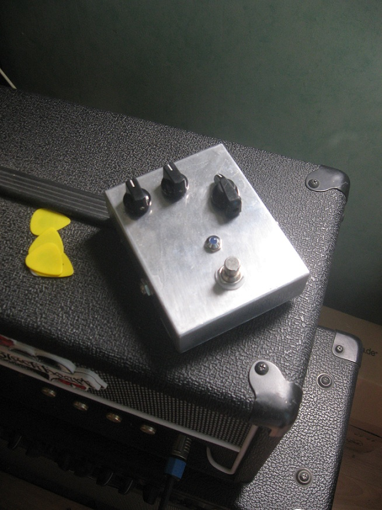
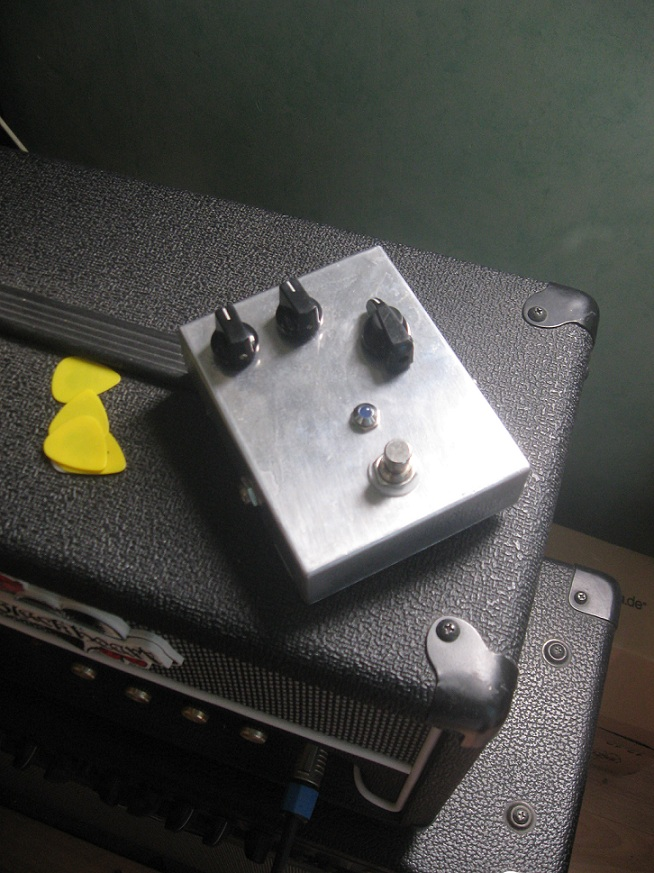

MISC. FUZZES
Here are few pictures lefts of previous fuzz pedals. All more or less based on the fuzz face with additional features (Switchable output caps, different biasing, input control, ect...). Around 2009/2010. 
Here are few pictures lefts of previous fuzz pedals. All more or less based on the fuzz face with additional features (Switchable output caps, different biasing, input control, ect...). Around 2009/2010. 